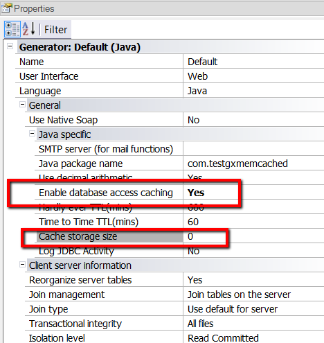

To configure the amount of memory of the server running the application within the process in execution, dedicated to storing the data cache. Description
 Values0 = Infinite quantity of KBytes Default = 0 The value of the property is expressed in KBytes, where zero represents infinite. Note: This property is enabled if the value of the Database access caching property is set to True. Scope Platforms: Web(.Net, Java) See Also
Hardly ever TTL(mins) property |
| Backlinks | ||
| Change frequency property | Database access caching property | Hardly ever TTL(mins) property |